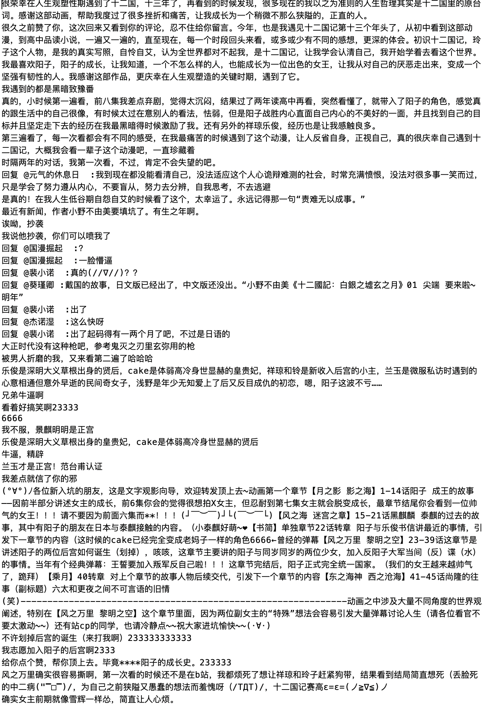

I just saw a very interesting image today. It talks about a horse--
I just saw a very interesting image today. It talks about a horse--
The Process of Capstone
What is said is actually the truth. Now I’m at the step of scraping data from the Bilibili website. My professor Lenny told me Python is not a difficult language. Why did I trust him? Well, maybe because Python is easy and friendly to him, not me ╥﹏╥...
My original proposal is full of ambition. I wanted to scrape data from 3 different resources:
Bullet Comments in Bilibili
First, for the data of on-time comments when you watch the anime “The Twelve Kingdoms”, I wanted to analyze which part is the largest number of comments each episode. From my experience of watching Bullet Screen, the key points often follow with a sea of bullet comments. I think it will be fun if I can get like the top 10 moments with the largest numbers of bullet comments.
Second, for the data of bottom comments when you open the anime page in Bilibili, I wanted to know “when people talk about ‘The Twelve Kingdoms’, what they talk about”. For me, “The Twelve Kingdoms” has not just an anime; I watched it when I was 14 years old. It’s my spiritual leader to some extent. The story begins with a teenage girl-- Youko Nakajima. She is an obedient daughter from parents’ eyes, an exemplary student in teachers’ eyes. However, she is confused about her existence. Does she love to study? No, she studies hard because her parents and teachers want her to do. Does she have friends? No, her classmates think she ratted on them to teachers. Who does she want to become in the future? She has no idea. One day, a Kirin, a mythological beast, appears. The Kirin select Youko as the king of country Qing. So Youko has to meet all sorts of people, face the challenge of natural and man-made disasters. During her adventure, she grows up at express speed. At the end of the first fiction, she has become a mature, proactive and responsible adult.
Youko and Kirin
I really want to know what the bottom comments mentioned most. So I used Python to scrape the data from Bilibili. The bottom comments are nealy 200 pages. And it's Chinese. I have to say, Python is so painful... Anyway, it took me over three weeks to get the data.
Rough Comments
And the rough word cloud chart shows this:
Initial Wordcloud of Bottom Comments
The keywords are “Youko”, “Kirin”, “myself”, “grow”, “Rakushun” and so forth. I want to delete some words that not make sense, like “reply”. The high frequency of “reply” is because of the bug when people replied to other people’s comments, the line will show “reply B: …”
Ideally, the word cloud chart should show the top 20 words in the bottom comments. And when people hover on the word, a tooltip will show up with some sentence with the word.
Third, for the data of the words from a series of fictions “The Twelve Kingdoms”, I want to use Python to do many things. In this part, I’m not ambitious, I can’t decide which road I ought to go until I finish the data analysis. I can count how many times the main characters appear in the novel, analyze the relationship among characters, or sentiment analysis to see if the novel is positive or negative. Since I don’t know what the answer is, I need to try those three ways.
I searched a lot, like “How I used Python to analyze Game of Thrones”, “Simply read a novel with Python”, “Character Network with Harry Potter”, “Sentiment Analysis on the Texts of Harry Potter”.
In addition, I found an excellent tutorial, “A Network Analysis of Game of Thrones”. The author analyzed the network of characters in Game of Thrones and how it changes throughout the books. I will analyze the fiction “The Twelve Kingdoms” this weekend. Hope I can get what I want.
Other than the data I have now and the data I should analyze, I need to begin to visualize the data I already have. I feel like the word cloud is not a perfect choice. Maybe the bubble or network diagram is a better choice. Anyway, I will talk with Professor Cairo this week, then test which chart makes sense.
Well, back to the horse I mentioned before. I hope my work won’t finally become the cartoon horse, even if I suspect the future will come true. I have less than 3 months to finish my capstone. Crossing fingers!
In the end, enjoy the sentences in “The Twelve Kingdoms” that I like:
“It's not true that you were the good child. Not a good child at all. You were scared of rejection, so you made yourself a convenient child for your parents to have around."
Kiyohide
“And that's when I realized that there's really two ways people cry. You cry when you're sorry for yourself, and then you cry when you are really sad. The tears you cry for yourself? Those are kid tears. You're crying because you want somebody to help you or pick you up. Your mom, your dad, the old lady next door... anyone.”
Blue Monkey
“You know, Youko. When you don't know which choice is the best, then you should choose the path you ought to take, rather than the one you wish for. You're going to regret the path not taken. But regrets being more or less equal, better the one where the regret is even a bit less.”
Rakushun